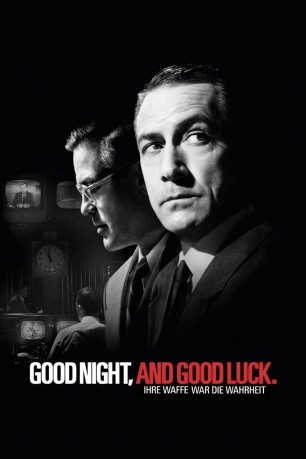
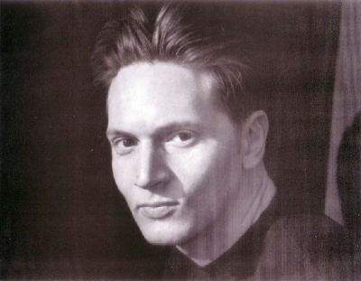
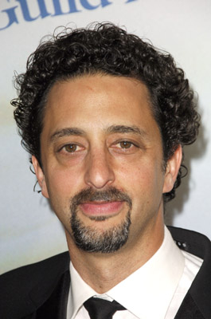
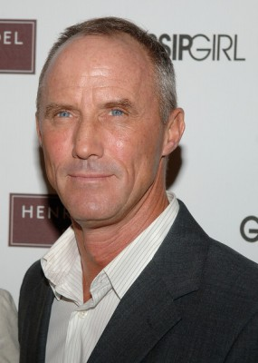
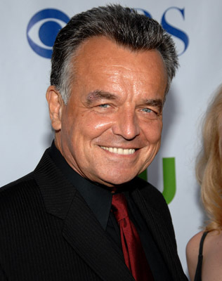
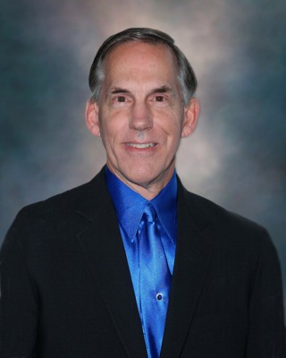

#3412 Good Night, and Good Luck - Der Fall McCarthy
Alternativ: Good Night, and Good Luck.
Auszeichnungen: für 6 Oscars nominiert
 
 IMDB-Wertung: 7.5 / 10
IMDB-Wertung: 7.5 / 10  Metascore: 80
Metascore: 80 
In den 50er Jahren durchlief die USA eine Welle der Angst vor dem Kommunismus, angeführt durch die politischen Hexenjagden des Senators Joseph McCarthy, der ganz Amerika von anti-amerikanischen Umtrieben säuubern wollte. Im Jahr 1953 nahm der CBS-Journalist Ed Murrow samt seinen Kollegen die Machenschaften und Verhörmethoden McCarthys genauer unter die Lupe und entlarvten langsam aber sicher den falschen Schein, gedeckt durch ihren Produzenten Friendly. Als sie ihre Sendung "See it now" für die Aufklärung des Bevölkerung einsetzen, geraten sie bald in Bedrängnis, die Chefs des Senders, die Sponsoren und die Regierung selbst läuft gegen die Journalisten Sturm. Selbst als sie in McCarthys Visier geraten, machen Murrow und seine Leute weiter und setzen Ereignisse in Gang, die den Senator schließlich stürzen...
Jahr: 2005
Dauer: 92 Minuten
FSK: 0
Land: USA Studio: WIPTonspuren: DD5.1 - ,
Untertitel: Deutsch, Englisch, Französisch, ,
Auflösung: 1080p (1920x1080) Größe: 8437 MB
Genre: Drama, Geschichte, Biographie
Regisseur:  George Clooney
George Clooney
Drehbuch: George Clooney, Grant Heslov
Soundtrack: Jim Papoulis
Darsteller:
 Jeff Daniels als Sig Mickelson
Jeff Daniels als Sig Mickelson David Strathairn als Edward R. Murrow
David Strathairn als Edward R. Murrow Alex Borstein als Natalie
Alex Borstein als Natalie Rose Abdoo als Mili Lerner
Rose Abdoo als Mili Lerner- Dianne Reeves als Jazz Singer
 Tate Donovan als Jesse Zousmer
Tate Donovan als Jesse Zousmer Reed Diamond als John Aaron
Reed Diamond als John Aaron-  Matt Ross als Eddie Scott
 Patricia Clarkson als Shirley Wershba
Patricia Clarkson als Shirley Wershba Robert Downey Jr. als Joe Wershba
Robert Downey Jr. als Joe Wershba George Clooney als Fred Friendly
George Clooney als Fred Friendly Tom McCarthy als Palmer Williams
Tom McCarthy als Palmer Williams Glenn Morshower als Colonel Anderson
Glenn Morshower als Colonel Anderson Don Creech als Colonel Jenkins
Don Creech als Colonel Jenkins-  Grant Heslov als Don Hewitt
-  Robert John Burke als Charlie Mack
-  Ray Wise als Don Hollenbeck
 Robert Knepper als Don Surine
Robert Knepper als Don Surine- Helen Slayton-Hughes als Mary
 Frank Langella als William Paley
Frank Langella als William Paley Simon Helberg als CBS Page
Simon Helberg als CBS Page- JD Cullum als Stage Manager
 Peter Jacobson als Jimmy
Peter Jacobson als Jimmy-  Bill Blair als TV Studio Crewman , uncredited
- Liberace als Himself , archive footage, uncredited
- Bruna Matsin als Sig Mickelson's Wife , uncredited
- Katharine Phillips Moser als Jesse's Wife , uncredited
- Alexana Thomas als Senator's Wife , uncredited
- Peter Martin als Pianist
- Christoph Luty als Bassist
- Jeff Hamilton als Drummer
- Matt Catingub als Saxophonist
- John Kepley als CBS Lawyer #1
- David Paul Christian als CBS Lawyer #2
- Joyce Lasley als Make-Up Girl
- Felix J. Boyle als Prominant Chicagoan , uncredited
- Roy M. Cohn als Himself , archive footage, uncredited
- Ray Donn als Reporter , uncredited
- Joseph Dowd als Reporter , uncredited
- Robert F. Kennedy als Himself , archive footage, uncredited
- Joseph McCarthy als Himself , archive footage, uncredited
- John L. McClellan als Himself , archive footage, uncredited
- Rochelle Warner als Speech Wife , uncredited
- Joseph N. Welch als Himself , archive footage, uncredited
Datei: X:\2005(G-M)\Good Night, and Good Luck - Der Fall McCarthy (2005, FSK0, 1920x1080).mkv seit 02.04.2016
Festplatte: HD 2005(G-Z)-2006(A-Z)
 Es gibt insgesamt 46 Filme in der Gruppe '2005(G-M)'
Es gibt insgesamt 46 Filme in der Gruppe '2005(G-M)'